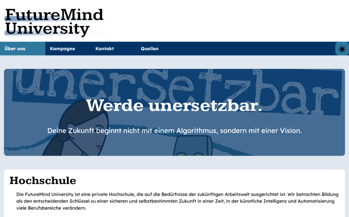

As a submission for a university course groups were tasked to design and create parts of a fictional products advertisement campaign.

The Project Website.
Project Website for you to checkout <3
The campaign had to loosely adhere to the theme Bildung in der Zukunft (Future Education).
Every part of the project would require new skills that would be thought 2 weeks before the deadline.
This included the product and visual design, poster and Radio Advertisement, and lastly a Website including documentation.
Our group decided on a university which would incorporate the skills to use current technologies in its courses. This was specifically thought out to teach skills relating to the usage of AI agents, but not limited to just this technology.

Advertisement poster we designed for the project.
Personally, I wasn't happy with the direction of the project going toward AI. I wasn't seeing eye to eye on the level of AI embracement with the rest of the Team. I've grown tired of its overuse as a project theme in my University. Especially because all the discourse on campus is naive and unquestioningly pro AI in a way that feels surreal.
But what I particularly enjoyed was that the FutureMind University is a constructive solution to the future problem of worker replacement with AI. The Idea being that by embracing AI skills as a work tool one would become less replaceable.
Below you will find the documentation in German.
Website Documentation